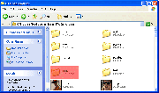

Windows Server NL
From SA-MP Wiki

Contents |
[edit]
Benodigdheden
- 32\64-bit Microsoft® Windows® Operating System
- Internet toegang (snelle upstream, een 100 slots server gebruikt ruig 4Mbps)
- Poort 7777 geopend (standaard) | Info
- 7-Zip® of een ander archiveringsprogramma | 7-Zip is alleen nodig om the .zip extensie te open (uitpakken voor de server bestanden)
[edit]
Server op zetten
[edit]
De bestanden krijgen
Eerste stap om je SA:MP server te laten lopen is om "Windows Server" te downloaden. Dit kan je vinden op SA-MP downloads subkop. Klik op 1 van de download links om de download te starten.
[edit]
Server Instellen/Configureren
Zodra je alle bestanden hebt gedownload moet je ze uitpakken waar het beste voor je is.(Aangeraden: C:\Program Files\Rockstar Games\GTA San Andreas\samp\). Kijk of de bestanden op zijn plek staan (zie Locatie). Zodra je denkt dat alles op zijn plek is kunnen we verder aan 't slag.  Locatie
Locatie
[edit]
Server.cfg
Open server.cfg in de uitgepakte bestanden. Open het met Notepad of een andere editor. Dit is de configuratie voor je server.
Meer informatie over dit bestand kun je vinden op server.cfg
[edit]
Je server starten
Zodra je alles heb geconfigureerd, open dan samp-server.exe. Als het mis gaat, doe het dan via opdrachtprompt:
Start -> Uitvoeren -> Typ cmd -> druk Enter. Daar typ je
cd plaats\naar\server start samp-server.exe
[edit]
LAN
Voor meer informatie over een LAN-server, klik hier.

{kind=link}